PERMANENT SOFT
OMBRE BROWS
Natural, soft and long-lasting brows tailored to your features.
LEARN MOREMore than brows
Natural, beautiful results tailored to you.
Professional permanent makeup and
beauty treatments in Athenry, Galway.
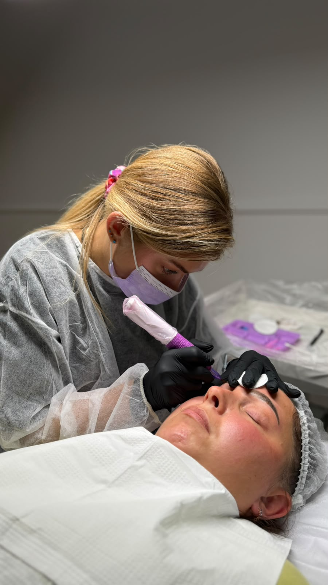
Natural, soft and long-lasting brows tailored to your features.
LEARN MORE
A combination of brow tint, brow shaping and eyelash tint.
LEARN MORE

Skin care treatments tailored to your needs.
LEARN MORE
Threading for precise facial hair removal.
LEARN MORE
Removal treatments for unwanted brow pigment and small tattoos.
LEARN MORE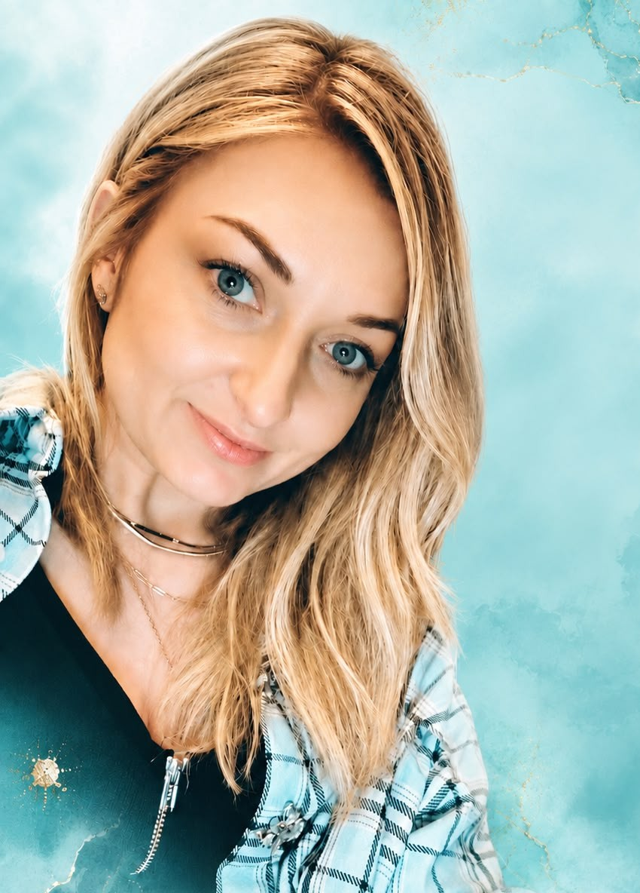
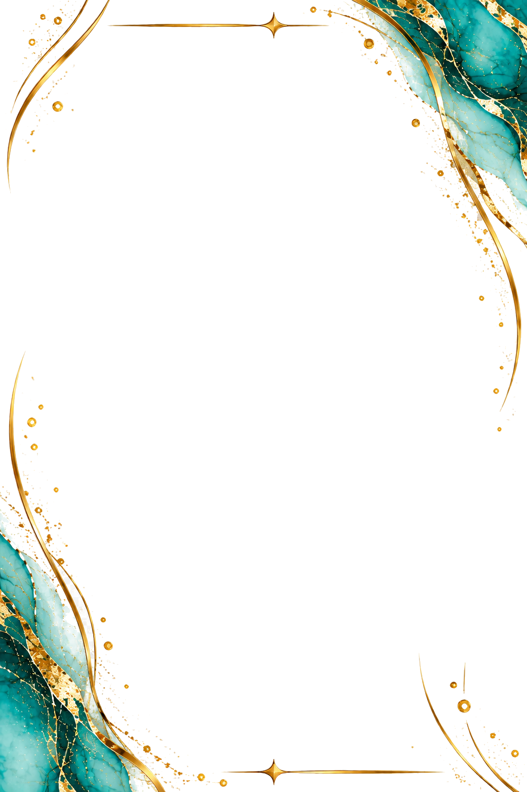
Hi, I'm Eva ♡
I am a qualified ITEC Beauty Therapist with 6 years of experience in the beauty industry. Over the years I have worked extensively with skin treatments, laser and advanced facial therapies. My passion for natural beauty and attention to detail led me to specialise in permanent makeup, focusing on soft, natural-looking brows that are tailored to each individual client.
My goal is to enhance your natural features, boost your confidence and make you feel the best version of yourself.
MORE ABOUT ME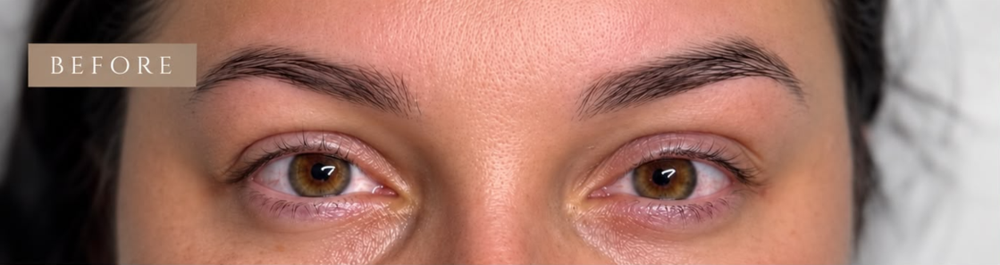
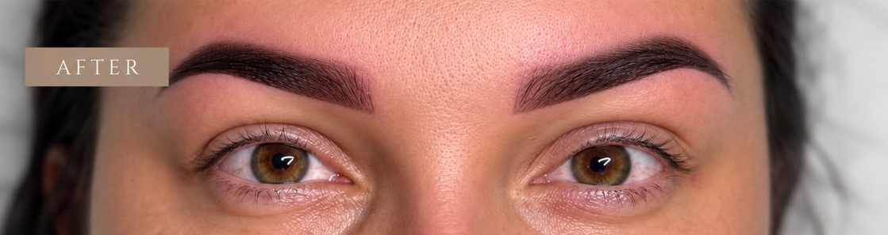
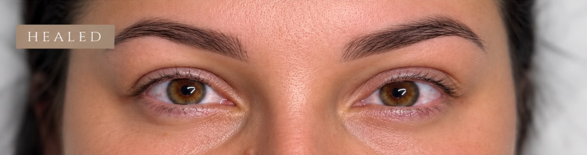
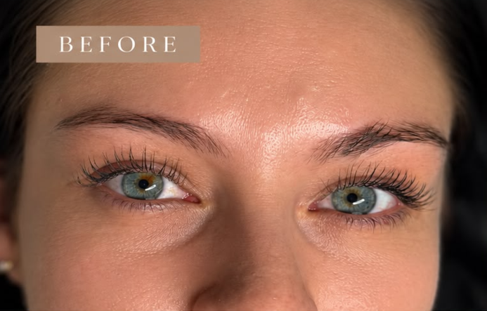
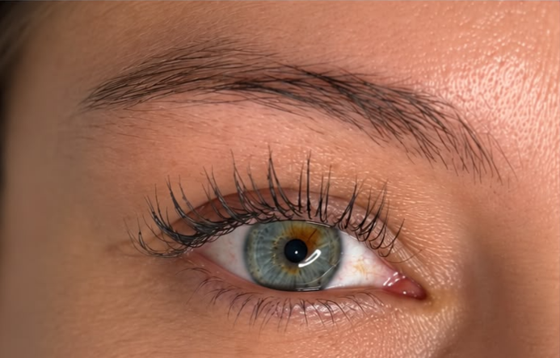
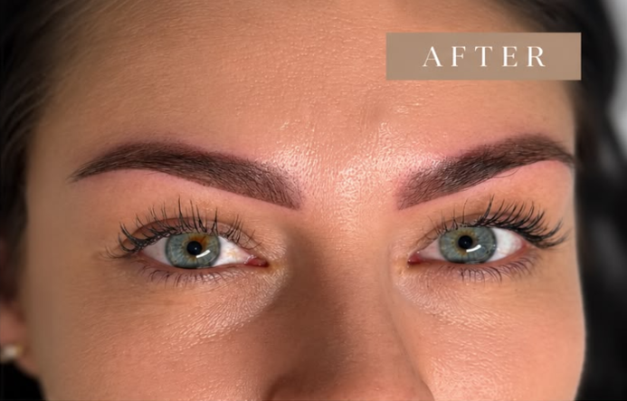
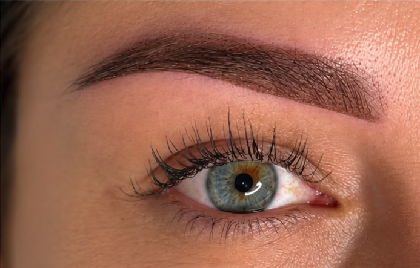
A soft, natural look tailored to your features. Includes consultation, brow mapping, patch test, treatment & aftercare.
Complimentary for clients who had their initial Soft Ombre Brows treatment with Eva PMU Studio.
Required at least 48 hours before treatment. The €15 is deducted from your treatment price if you go ahead with your brows.
Safe removal using a chemical solution. Consultation required before treatment. Multiple sessions may be required depending on pigment and previous work.
Brow Tint • Brow Shape • Eyelash Tint
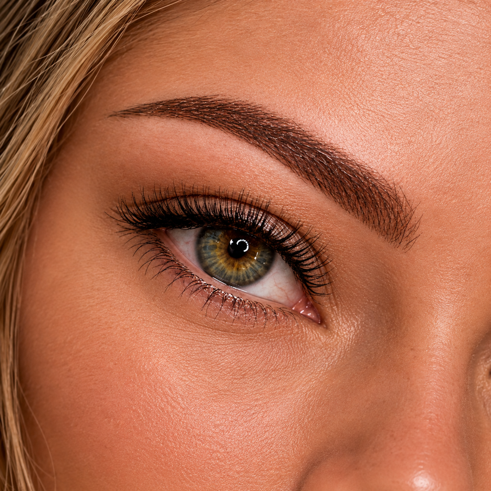


Eva is amazing! My brows look so natural and I feel so much more confident. The whole experience was professional and relaxing.
I had my old brows removed and the results are incredible. Eva explained everything and made me feel so comfortable. Highly recommend!
The eye trio is my favourite treatment! My brows and lashes look perfect and it saves me so much time.
Allow approximately 2 hours for a first permanent brow appointment, including consultation and aftercare guidance.
Longevity varies by skin type, lifestyle and aftercare. A consultation is the best way to discuss what to expect for your skin.
Yes. Use the booking form below to request an appointment or consultation.
PMU Pigment Removal
Laser treatment is not the only option for addressing unwanted permanent makeup. Depending on the pigment, skin and treatment history, a chemical remover may be considered to help reduce or lighten selected PMU.
At Eva PMU Studio, I use a professional PML Remover formulated for the removal and lightening of permanent makeup pigments.
The remover is applied to the pigmented area using a professional PMU device. As the skin heals, pigment may gradually move towards the surface. Results vary, and suitability is assessed individually.
The PML Remover formulation includes:
Aftercare & Healing
A small scab may form as part of the normal healing process and typically sheds within 7–10 days.
Allow the skin to heal fully before considering another removal session. If further treatment is suitable, sessions are generally scheduled around eight weeks apart.
Healing and results vary from person to person. Complete pigment removal cannot be guaranteed, and more than one session may be needed.
Unsure whether you need pigment removal or lightening before a new brow treatment? During a consultation, I can assess your existing PMU and discuss the options that may be suitable for you.
PMU removal: €70 per session
Every treatment begins with an individual assessment to confirm suitability.
Permanent Makeup Brows
Natural-looking, tailored brows designed to complement your features.
Soft Ombre Brows is a semi-permanent makeup technique that creates a soft, powdered effect. It adds definition while maintaining a natural, elegant appearance.
Each treatment is tailored to your face shape, natural brows, skin type and personal preferences. Before treatment, we discuss your desired shape and colour, then carefully map your brows for your approval.
Your appointment includes:
We discuss your expectations, previous PMU, skin and any relevant sensitivities or contraindications.
Your brows are measured and mapped to create a balanced shape suited to your features. You can approve the shape before treatment begins.
The pigment is selected to complement your natural colouring, existing brow hair and desired result.
Pigment is gently implanted into the skin using a professional PMU device to create a soft, powdered effect.
You will receive clear instructions on caring for your brows throughout the healing process.
Healing is an important part of the PMU process, and your brows will change as they heal.
Your brows may appear darker, warmer and more defined than the healed result. Mild redness or sensitivity around the treated area may also occur; this is expected.
The colour gradually softens, and the skin may become dry or flaky. Do not pick, scratch or peel the area; allow the skin to shed naturally.
The brows may temporarily look lighter or patchy as the skin continues to heal. This is sometimes called the “ghosting” stage and does not necessarily mean the pigment has disappeared.
The colour gradually settles, and the healed result becomes clearer.
A perfecting appointment may be recommended once your brows have fully healed. It allows us to assess how your skin has retained the pigment and make any necessary adjustments to colour, shape or density.
For your first Soft Ombre Brows treatment, the 6–8 week perfecting touch-up is included in the treatment price.
To support the healing process:
Everyone’s skin heals differently, so the final colour and pigment retention can vary from person to person.
Permanent makeup is a cosmetic tattooing procedure, and results cannot be guaranteed. Pigment retention depends on factors such as skin type, lifestyle, skincare, sun exposure and individual healing.
A consultation and any applicable pre-treatment requirements, including patch testing where appropriate, must be completed before treatment.
Whether you are looking for a subtle enhancement or more defined brows, your treatment will be designed specifically for you.
Soft Ombre Brows — €200
6–8 Week Perfecting Touch-Up — Included
Your Appointment
To help you prepare for your appointment, please follow the guidelines below. They support a considered consultation and help us plan your treatment.
You do not need to decide on your exact brow shape or colour in advance. We will discuss your preferences during the consultation and map your brows carefully before treatment.
If you are unsure whether a medication, treatment or skincare product could affect your appointment, please contact me before booking.
Any applicable consultation, consent and patch-testing requirements will be completed before treatment.
Ready to feel confident in your brows?
Complete the form and Eva will get back to you to confirm your appointment.